1. What Azure Storage is
Azure Storage is Microsoft's managed platform for keeping data in the cloud. It is not one service but a family, and most of the family lives inside a single resource called a storage account.
| Service | What it stores | Typical use |
|---|---|---|
| Blob | Objects: any file, any size | Backups, images, logs, data lakes, static websites |
| Files | Shared folders over SMB or NFS | Replacing a file server, shared configuration across VMs |
| Queue | Small messages between parts of an application | Passing work from a web front end to background jobs |
| Table | Schema-less rows of keys and attributes | Simple lookups, device or user metadata |
| Disks | Block storage for virtual machines | Operating system and data disks |
Blob, Files, Queue and Table can all sit in one storage account. Managed disks belong to the same family but are created alongside a VM rather than inside an account.
2. Storage accounts and redundancy
The storage account is the top-level container. It fixes the region, the redundancy, the network rules and the security settings for everything inside it, and its name becomes part of every address, so the name must be unique across all of Azure.
Account types
- Standard general-purpose v2. The default. Supports every service and every blob access tier. Use it unless you have a specific reason not to.
- Premium block blobs. SSD-backed, blobs only, for workloads with very high transaction rates or a need for consistently low latency.
- Premium file shares. SSD-backed, Files only.
Redundancy
Every account keeps several copies of your data. You choose how far apart those copies are.
| Option | Copies | Survives |
|---|---|---|
| LRS, locally redundant | 3 in one data centre | Disk and server failures |
| ZRS, zone-redundant | 3 across availability zones in one region | The loss of a data centre |
| GRS, geo-redundant | 6: LRS plus 3 in a paired region | The loss of a region |
| GZRS, geo-zone-redundant | 6: ZRS plus 3 in a paired region | Zone and regional failures |
The read-access variants, RA-GRS and RA-GZRS, also let you read from the second region at any time. More redundancy costs more, so LRS is the sensible choice for a lab.
3. Blob Storage in depth
The hierarchy
Blob Storage has three levels and nothing else: the account, containers inside it, and blobs inside those.
Folders are an illusion. A blob called web/www-2026-11-17.tar.gz simply has a slash in its name, and tools display the slash as a folder. Real directories exist only if you enable the hierarchical namespace, which turns the account into Data Lake Storage.
Blob types
| Type | How it works | Used for |
|---|---|---|
| Block blob | Uploaded as blocks, then committed as one object | Almost everything: files, backups, media |
| Append blob | New data can only be added to the end | Logs that grow continuously |
| Page blob | Random reads and writes in fixed-size pages | Virtual hard disks |
The type is set when the blob is created and cannot be changed afterwards.
Access tiers
| Tier | Minimum stay | Reading it back | Use for |
|---|---|---|---|
| Hot | None | Instant | Data in active use |
| Cool | 30 days | Instant | Recent backups |
| Cold | 90 days | Instant | Older backups that are rarely read |
| Archive | 180 days | Offline; must be rehydrated first, which can take hours | Long-term retention |
Going down the table, storing data gets cheaper and reading it gets more expensive. Moving or deleting a blob before its minimum stay brings an early deletion charge.
Data protection
- Soft delete keeps deleted blobs and containers for a retention period so they can be restored.
- Versioning keeps the previous copy every time a blob is overwritten.
- Lifecycle management moves blobs to cheaper tiers, or deletes them, based on age.
- Immutability stops blobs being changed or deleted for a fixed time, for compliance and ransomware protection.
- Object replication copies blobs asynchronously to another storage account.
Ways to grant access
| Method | What it is | When to use it |
|---|---|---|
| Microsoft Entra ID roles | Users and groups are given roles such as Storage Blob Data Contributor | The default choice for people |
| Managed identity | An identity that belongs to an Azure resource, such as a VM | Applications and scripts running in Azure |
| SAS token | A signed link with an expiry time and limited permissions | Short-term sharing with someone outside |
| Account key | A master key to the whole account | Avoid where possible |
| Anonymous access | Public read with no sign-in | Only for content that is meant to be public |
4. The lab: a keyless VM backup
The use case. A VM runs a web server. Its web content should be backed up to Blob Storage on a schedule. The usual shortcut is to paste a storage account key into the backup script, which leaves a master key sitting in a file on the server. This lab does it properly: the VM proves who it is with a managed identity, and the storage account trusts that identity through a role.
| Item | Value |
|---|---|
| Resource group | scslabs-rg, West US 3 |
| Storage account | scslabstore01, Standard, LRS |
| Container | backups |
| VM | scsubtusrv01, Ubuntu, running Apache |
5. Part 1: Create the storage account
Step 1Open Storage accounts
In the portal, go to All services → Storage → Storage accounts and click Create.
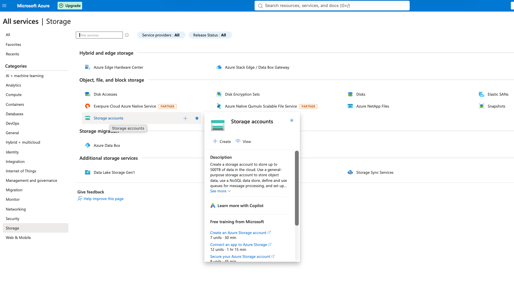
Step 2Basics
Choose the resource group, a globally unique account name (3 to 24 characters, lowercase letters and digits only), the region and the primary service.
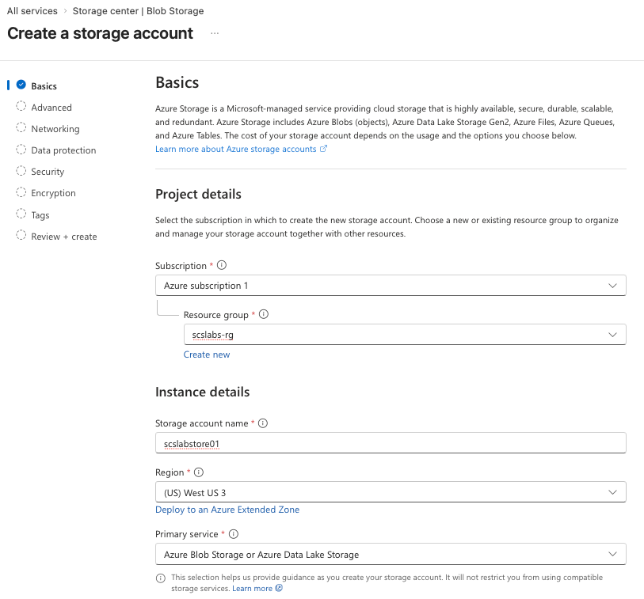
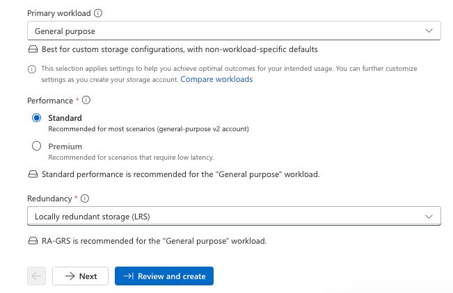
The portal recommends RA-GRS for a general-purpose workload. I chose LRS because this is a lab and three local copies are enough. For production data, pick the redundancy that matches how much an outage would cost you.
Step 3Networking
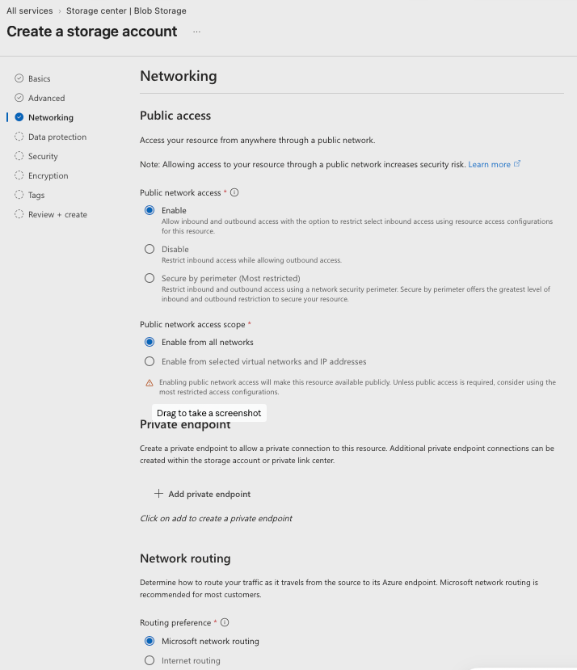
For the lab I left the account reachable from any network. That only means the endpoint answers; every request still has to be authorised. In production, restrict access to selected networks or use a private endpoint.
Step 4Security
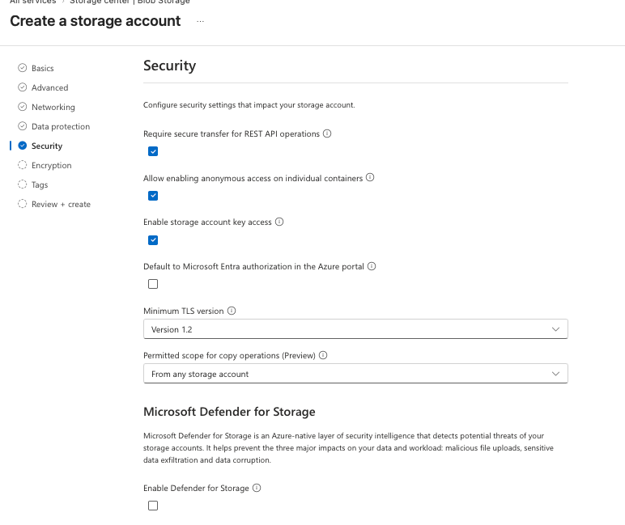
Step 5Encryption
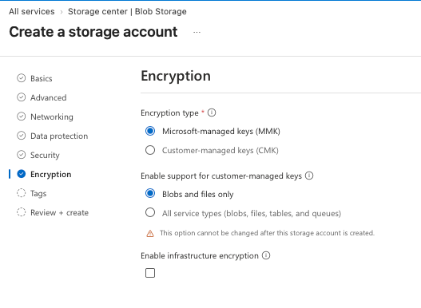
Data is always encrypted at rest. The only choice is who manages the key. Microsoft-managed keys need no work; customer-managed keys in Key Vault give you control over rotation and revocation.
Step 6Review and create
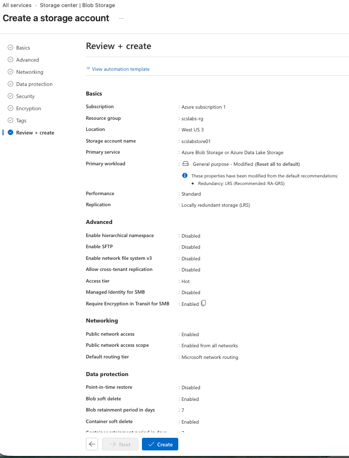
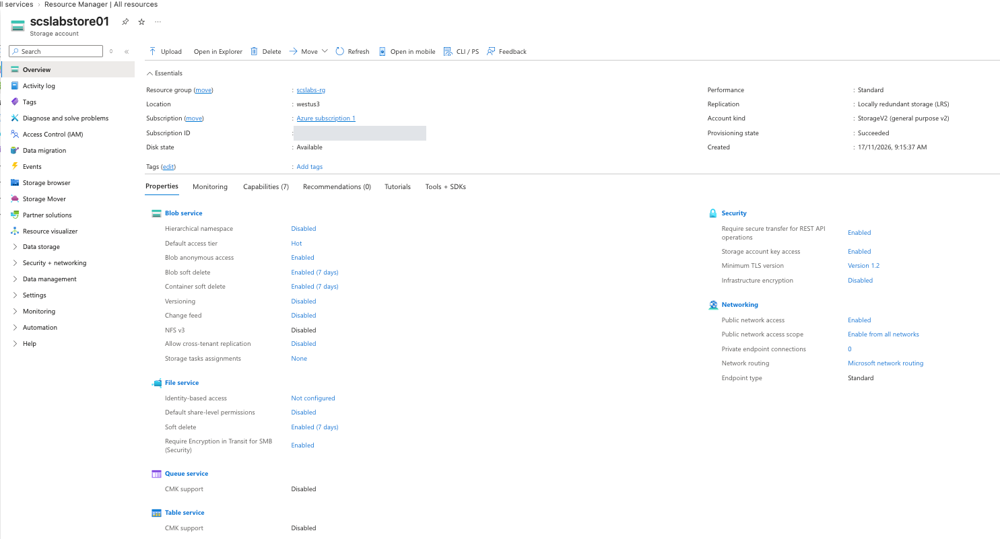
6. Part 2: Grant yourself data access
This step surprises most people. Being Owner of the subscription lets you manage the storage account, but it does not let you read or write the blobs in it. Data access is a separate set of roles.
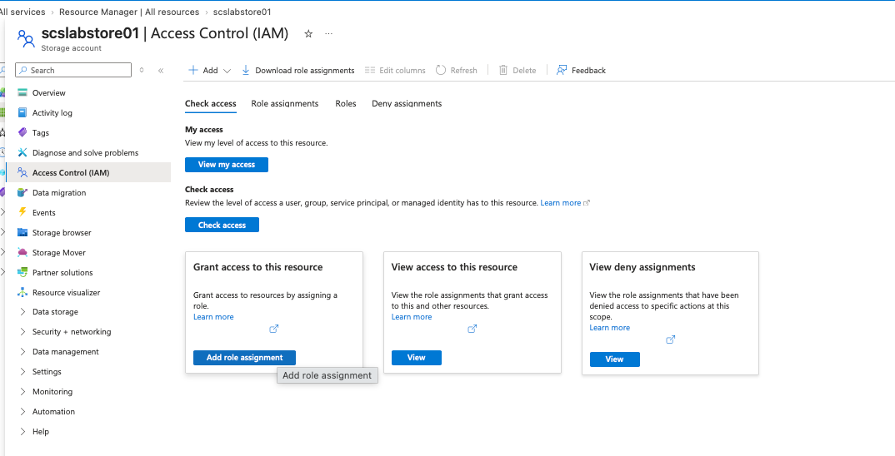
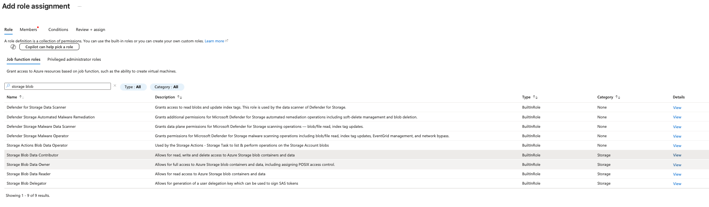
| Role | Allows |
|---|---|
| Storage Blob Data Reader | Read and list blobs |
| Storage Blob Data Contributor | Read, write and delete blobs and containers |
| Storage Blob Data Owner | Everything above, plus setting ownership and POSIX permissions |
| Storage Blob Delegator | Create the key used to sign user delegation SAS tokens |
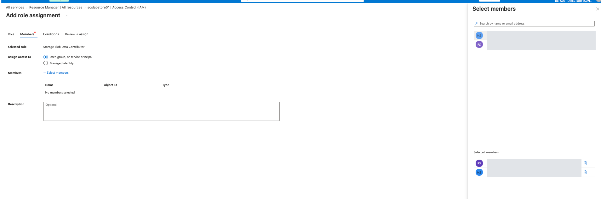
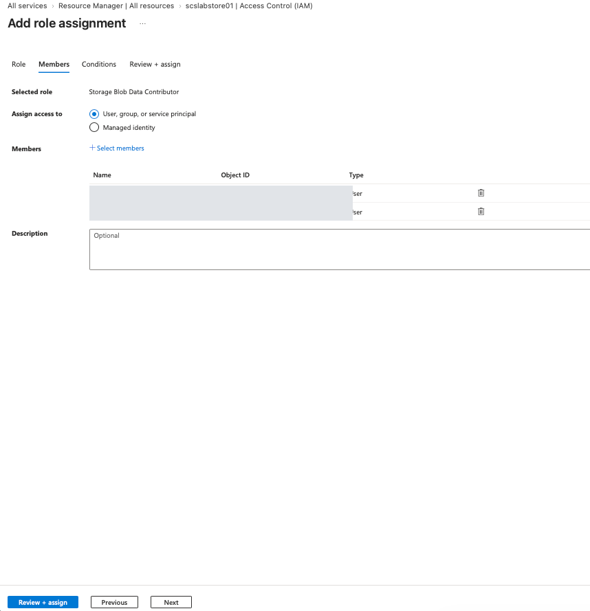
7. Part 3: Create a container
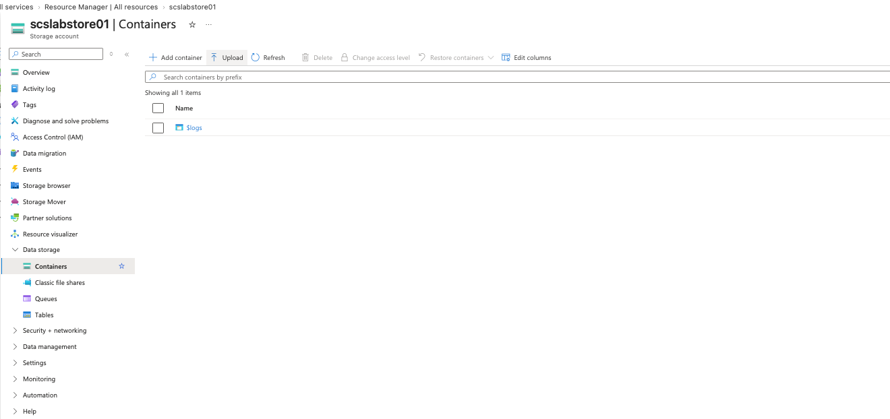
$logs container is created by Azure for storage logs.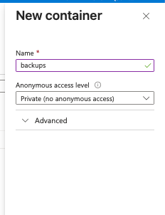
backups with anonymous access set to Private.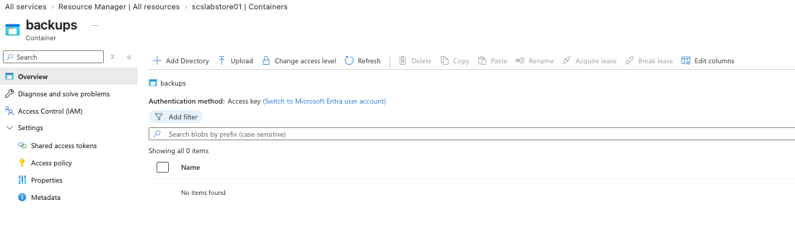
By default the portal browses blobs using the account key. Click Switch to Microsoft Entra user account so it uses the role from part 2 instead. If the list then fails to load, the role assignment is missing or has not taken effect yet.
8. Part 4: Give the VM an identity and a role
Step 7Turn on the system-assigned identity
On the VM, open Security → Identity, set Status to On, save, and confirm.
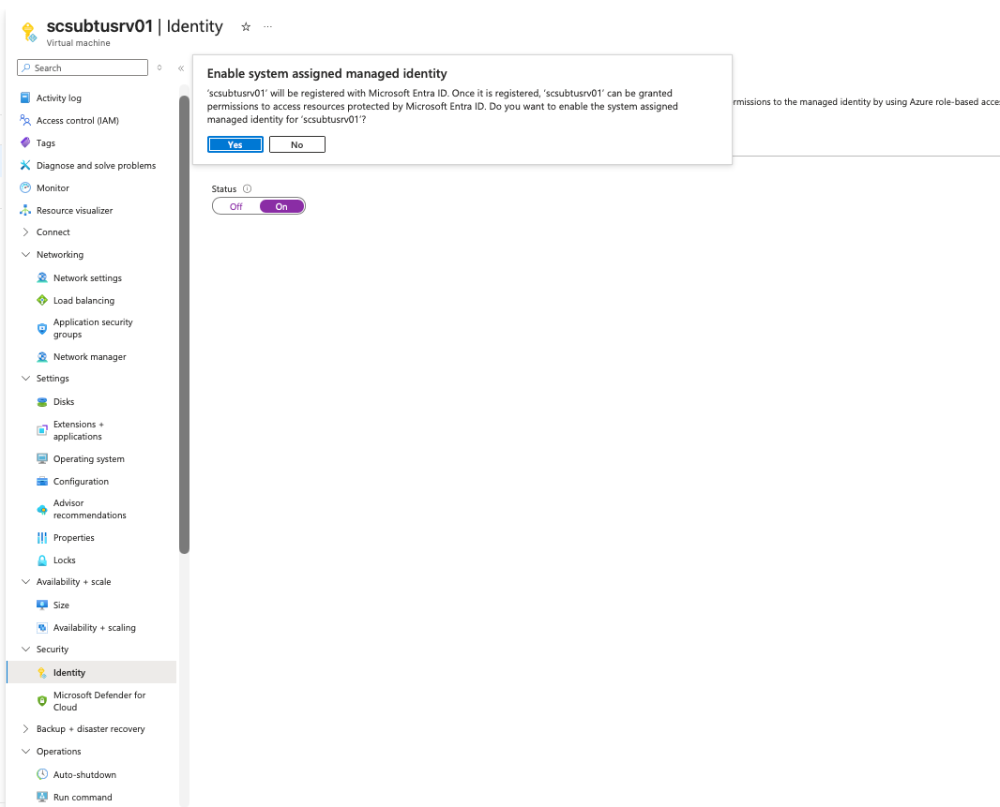
A system-assigned identity belongs to this one VM and is deleted with it. The alternative, a user-assigned identity, is a separate resource that can be shared by several VMs.
Step 8Assign the role to the VM
On the same page, click Azure role assignments, then Add role assignment.
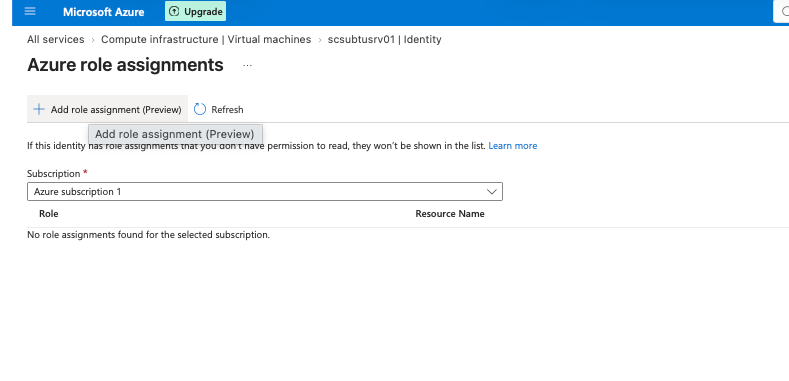
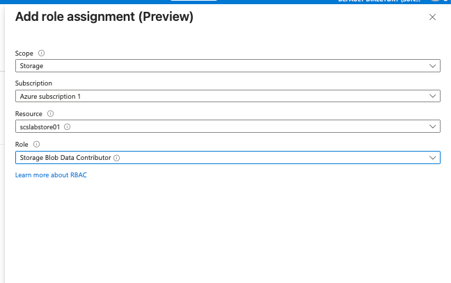
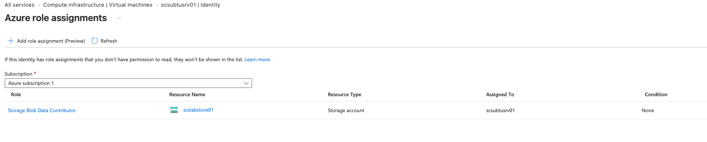
9. Part 5: Upload the backup from the VM
Step 9Sign in as the VM and create the backup
On the VM, install the Azure CLI, sign in with the managed identity, and archive the web content.
curl -sL https://aka.ms/InstallAzureCLIDeb | sudo bash
az login --identity
tar czf /tmp/www-$(date +%F).tar.gz -C /var/www html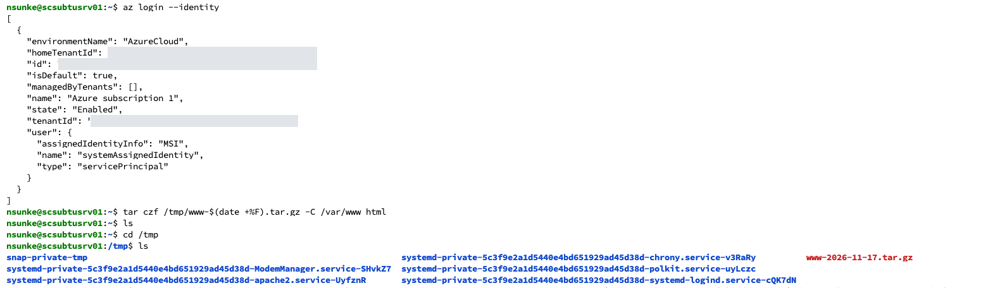
az login --identity signs in with no password. The user type is servicePrincipal and the name is systemAssignedIdentity.Step 10Upload
az storage blob upload \
--account-name scslabstore01 \
--container-name backups \
--name web/www-$(date +%F).tar.gz \
--file /tmp/www-$(date +%F).tar.gz \
--auth-mode login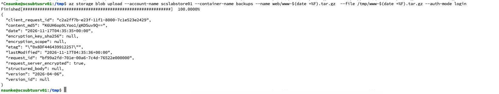
--auth-mode login tells the CLI to use the signed-in identity rather than look for a key.Two fields in the output are worth reading. request_server_encrypted: true confirms the blob was encrypted at rest. version_id: null shows that versioning is off, so overwriting this blob would replace it with no way back.
Step 11Check in the portal
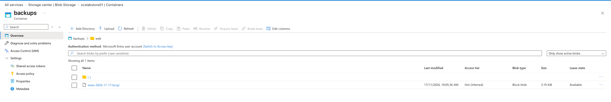
web folder. The portal is now using the Microsoft Entra user account.10. Extending the lab
The backup works. These four additions make it production-shaped. I have not captured screenshots for them here.
Turn on versioning and test recovery
- In the storage account, open Data management → Data protection and tick Enable versioning for blobs.
- Upload the same blob name again with
--overwrite. The blob's Versions tab now lists the earlier copy. - Delete the blob, switch the list to show deleted blobs, and choose Undelete.
Age backups into cheaper tiers
Under Data management → Lifecycle management, add a rule for block blobs with the prefix backups/web/:
- More than 30 days since last modified: move to Cool
- More than 90 days: move to Archive
- More than 365 days: delete
The rule runs about once a day.
Share one backup with a time-limited link
On a blob, choose Generate SAS. Set the signing method to User delegation key, permissions to Read, an expiry one hour ahead, and HTTPS only. The resulting URL downloads the file with no sign-in until it expires. A user delegation SAS is signed with your Entra identity rather than the account key, which makes it the safer kind.
Schedule it
Put the tar and upload commands in a script and run it from cron. Because the VM authenticates as itself, the script contains nothing secret.
#!/bin/bash
set -e
az login --identity --output none
F=www-$(date +%F).tar.gz
tar czf /tmp/$F -C /var/www html
az storage blob upload --account-name scslabstore01 \
--container-name backups --name web/$F --file /tmp/$F \
--auth-mode login --overwrite --output none
rm -f /tmp/$F11. Troubleshooting
| Symptom | Likely cause | Fix |
|---|---|---|
AuthorizationPermissionMismatch on upload | The identity has no data role, or the role was assigned moments ago | Check the role assignment; wait a few minutes and retry |
| Portal says you do not have permission to list the data | You are Owner but hold no data role | Assign yourself Storage Blob Data Contributor |
az login --identity fails | The managed identity is not enabled on the VM | Turn on the system-assigned identity and save |
| CLI asks for an account key or connection string | --auth-mode login was left out | Add it to the command |
| Account name rejected at creation | Name already taken, or contains capitals or hyphens | Use 3 to 24 lowercase letters and digits |
PublicAccessNotPermitted when opening a blob URL | Anonymous access is off, as it should be | Sign in, or use a SAS link |
| Requests time out from one network only | The storage firewall excludes that network | Check Security + networking → Networking |
12. Best practices
Access
- Use Microsoft Entra ID and managed identities instead of account keys. Disable key access on the account once nothing depends on it.
- Assign roles at the narrowest scope. A container is better than the account, and the account is better than the subscription.
- Turn off anonymous access at account level unless you are hosting public content.
- Prefer user delegation SAS, keep expiry times short, and require HTTPS.
Network
- Restrict the firewall to known networks, or use a private endpoint so the account is reachable only from your virtual networks.
- Require secure transfer and TLS 1.2 or later.
Protection
- Enable soft delete and versioning on any account that holds backups.
- Add a CanNotDelete lock to important storage accounts.
- Use immutability policies for backups that must survive a compromised administrator account.
- Choose redundancy deliberately. LRS protects against hardware failure, not against losing the region.
Cost
- Automate tiering with lifecycle rules rather than moving blobs by hand.
- Respect minimum stays. Do not send data to Cool, Cold or Archive if you expect to delete or read it soon.
- Remember that versions and soft-deleted data are billed. Add lifecycle rules for old versions too.
- Watch data leaving Azure. Downloads to the internet are charged; uploads are not.
13. Azure CLI version
# Storage account
az storage account create \
--resource-group scslabs-rg --name scslabstore01 \
--location westus3 --sku Standard_LRS --kind StorageV2 \
--access-tier Hot --allow-blob-public-access false \
--min-tls-version TLS1_2
SA_ID=$(az storage account show -g scslabs-rg -n scslabstore01 --query id -o tsv)
# Data role for yourself
az role assignment create \
--assignee $(az ad signed-in-user show --query id -o tsv) \
--role "Storage Blob Data Contributor" --scope $SA_ID
# Container
az storage container create \
--account-name scslabstore01 --name backups --auth-mode login
# Managed identity for the VM, and its role
az vm identity assign -g scslabs-rg -n scsubtusrv01
az role assignment create \
--assignee $(az vm show -g scslabs-rg -n scsubtusrv01 --query identity.principalId -o tsv) \
--role "Storage Blob Data Contributor" --scope $SA_ID
# Versioning and soft delete
az storage account blob-service-properties update \
-g scslabs-rg --account-name scslabstore01 \
--enable-versioning true \
--enable-delete-retention true --delete-retention-days 714. Cost and clean-up
Blob Storage is billed on four things: how much you store, which tier it is in, how many read and write operations you make, and how much data leaves Azure. A few kilobytes on LRS in the Hot tier costs effectively nothing.
To remove everything, delete the storage account. That deletes all containers and blobs in it. The VM's role assignment disappears with the account; turn off the VM's managed identity as well if nothing else uses it.
Key takeaways
- Azure Storage is a family: Blob, Files, Queue, Table and Disks. A storage account sets region, redundancy and security for what it holds.
- Blob Storage is account, container, blob. Tiers trade storage price against access price.
- Managing an account and reading its data are separate permissions. Owner alone cannot read blobs.
- A managed identity lets a VM authenticate to storage with no stored secret.
- Soft delete, versioning and lifecycle rules turn a container into a dependable backup target.